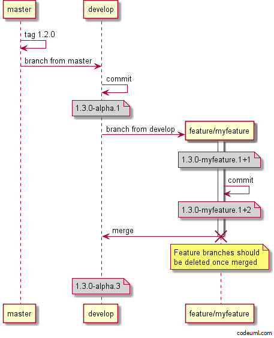
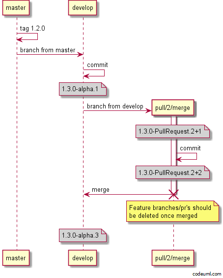
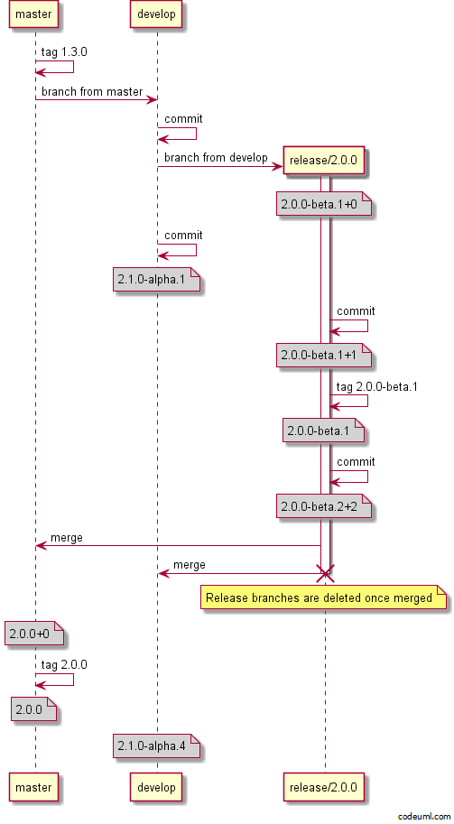
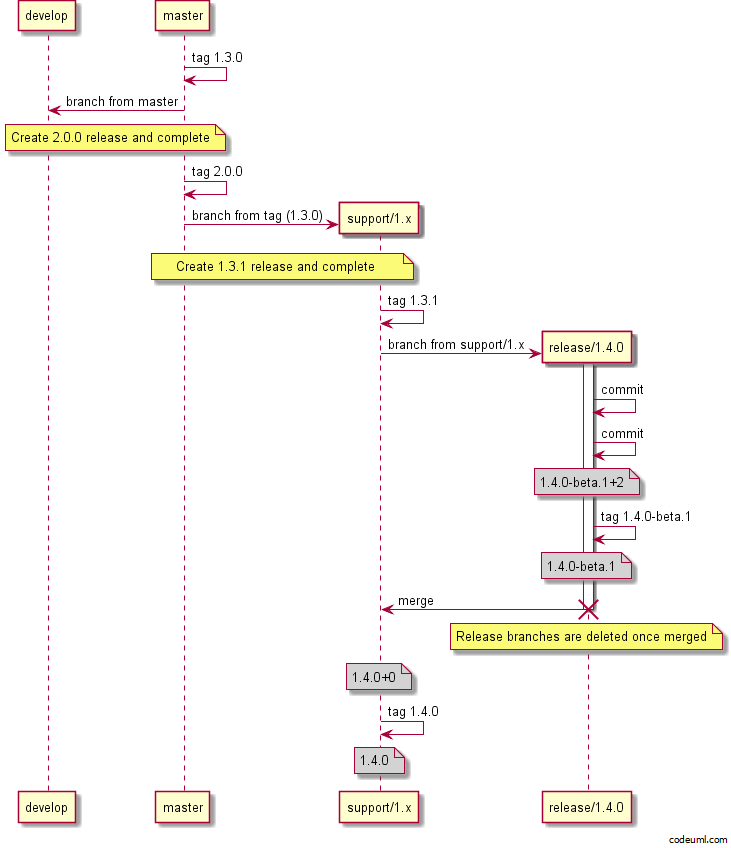

These examples are using the default configuration with GitVersion. Which is
continuous deployment mode for
develop and continuous delivery mode
for all other branches.
This default configuration allows you to publish CI builds from develop to a CI MyGet feed, or another CI feed. Then all other branches are manually released then tagged. Read more about this at version increments.
Feature Branches
Feature branches will take the feature branch name and use that as the pre-release tag.

Notice after the feature branch is merged, the version on develop is
1.3.0-alpha.3. This is due to develop running in continuous deployment
mode. If you configured develop to use continuous delivery the version would
still be 1.3.0-alpha.1 and you would have to use release tags to increment the
alpha.1.
You can see the difference on the feature branch itself, notice the version is
the same before and after the commit on the feature branch? Only the metadata
has changed. If you released the feature branch artifacts then tagged the
commit, the following commit would increase to -beta.2.
Pull Request
Because feature branches are most likely pushed to a fork, we are showing the pull request branch name which is created when you submit a pull request

Hotfix Branches
Hotfix branches are used when you need to do a patch release in GitFlow and
are always created off main

Minor Release Branches
Release branches are used for both major and minor releases for stabilisation
before a release. Release branches are taken off develop then merged to both
develop and main. Finally main is tagged with the released version.

Major Release Branches
Major releases are just like minor releases, the difference is you bump the major in the release branch name.

Support Branches
Support branches are not really covered in GitFlow, but are essential if you
need to maintain multiple major versions at the same time. You could use support
branches for supporting minor releases as well. If you are just supporting the
majors, then name your branch support/<major>.x (i.e support/1.x), to
support minors use support/<major>.<minor>.x or support/<major>.<minor>.0.
(i.e support/1.3.x or support/1.3.0)
Hotfix
Depending on what you name your support branch, you may or may not need a hotfix
branch. Naming it support/1.x will automatically bump the patch, if you name
it support/1.3.0 then the version in branch name rule will kick in and the
patch will not automatically bump, meaning you have to use hotfix branches.

Minor Release
